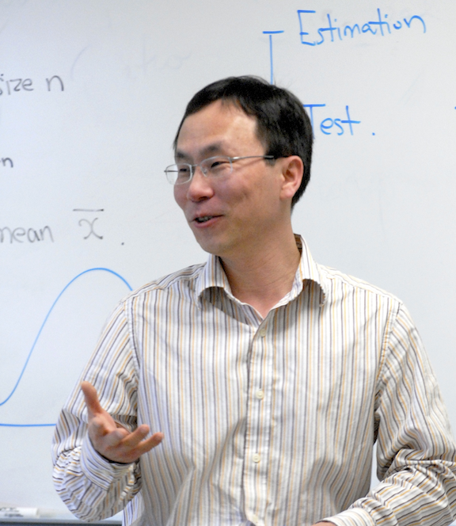

Welcome to my homepage
I received my Ph.D. in Statistics from the University of Georgia in 2003 and then joined the Department of Mathematics at Boise State University.
Research interests
My main research interests are time series, extreme value analysis, and applied statistics. Specifically, I am interested in
- Theory and methods for time series analysis
- Application of extreme value theory in climatology
- Time-varying coefficient dynamic regression models
- Algorithms and methods for large and big data
- Interdisciplinary research on range management and epidemiology